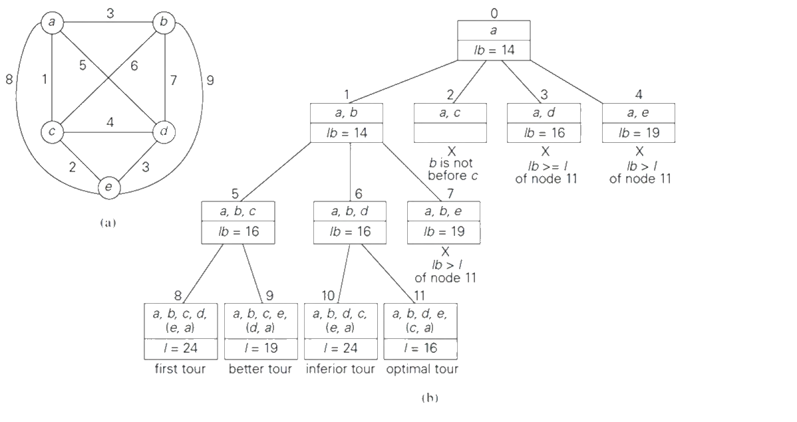

Algoritme
Info over de algoritmes die we gebruiken
Dijkstra
uitleg
Dit algoritme gaat over alle mogelijk combinaties van paden tussen het startpunt en eindpunt. Er wordt telkens gecontroleerd of de route korter is dan de huidige kortste route. Als dit zo is, word de huidig kortste route geüpdate. Het algoritme zal op het einde deze kortste route teruggeven.
voordelen
- Eenvoudig te implementeren
- Vind de aller kortste route
nadelen
- Traag
- Gebruikt veel geheugen
tijd: 150 ms
afstand: 8,82 km
Euclidisch
uitleg
Dit algoritme werkt op een gelijkaardige manier als Dijkstra alleen wordt er hier een andere methode gebruikt om de afstanden te berekenen (in vogelvlucht). Dit algoritme doet telkens zware bewerkingen terwijl dijkstra 1 keer een bestand inleest.
voordelen
- Zelfde voordelen als dijkstra
- Sneller voor korte routes
nadelen
- Zelfde nadelen als dijkstra
- Trager voor lange routes
tijd: 162 ms
afstand: 8,86 km
Branch and Bound
uitleg
Dit algoritme werkt door een heuristic te gebruiken, in ons geval de lower bound die per subroute van de totale route kan inschatten hoe lang die is. Per subroute word de route geselecteerd die de kleinste lower bound heeft en al de rest wordt niet meer naar gekeken. Dit herhaal je tot je alle locaties hebt bezocht en je tot een conclusie komt.
voordelen
- Het algoritme is veel sneller dan brute force of greedy algoritmes op grote schalen
- Het verbruikt minder rekenkracht dan bv. Dijkstra en Euclidisch
nadelen
- Veel moeilijker te implementeren dan Dijkstra
- Is niet altijd 100% accuraat
tijd: 19 ms
afstand: 9,49 km
Werking Branch and Bound
Visualisatie Branch and bound
Genereer cafés tot het goed lijkt en druk dan op de knop om de werking van het branch and bound algoritme te zien.
De lijnen in vogelvlucht zijn enkel ter illustratie van het algoritme. De route wordt bepaald met de werkelijke afstanden.
Ps. de tijd hier aangegeven hangt af van hardware, maar algemeen geldt B&B > Dijkstra > Euclidisch in snelheid. Op kleine afstanden is het verschil echter te verwaarlozen.